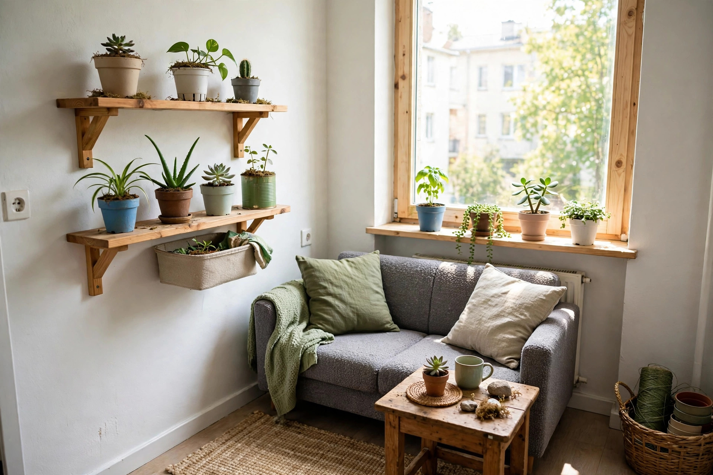

Budget Decor & DIY
Budget Plant Decor Ideas for Small Spaces Under $25
Intro
Plants are the cheapest way to make a small flat feel alive: they add colour, soften hard corners and make a room feel cared for, all for the price of a takeaway. But plants can also become clutter — too many pots, dying leaves and soil on the sill — so the trick is choosing a few plants that suit your light, your time and your space, and giving them a proper home.
This guide has 12 budget plant decor ideas — one big plant, hanging planters and cheap pots for small rooms, each idea under $25. Start with one plant in the room you spend most time in, and learn to keep it alive before you buy the next one.

1. One big plant instead of ten small ones — $15–$25
One large plant — a monstera, a fiddle-leaf fig or a tall snake plant — fills a corner and makes a statement, while ten small pots on a sill look like clutter. A large plant costs about $20. Put it in a plain pot on the floor beside the sofa or the window, and let it be the room's feature. A big plant also needs less attention than ten small ones: one watering routine, one pot, one place to check. In a small flat, one big plant is decoration; ten small ones are a chore.
2. A snake plant for beginners — $8–$12
A snake plant is the best first plant for a small flat: it survives low light, missed waterings and a forgotten holiday, and it cleans the air while it waits. A small snake plant costs about $10. It grows upright, so it fits a narrow gap beside a desk or a bed, and it needs water only every two or three weeks. If you have killed plants before, start here — a snake plant is very hard to kill.
3. Trailing plants on a high shelf — $8–$15
A trailing plant — pothos, spider plant or string of pearls — on a high shelf or a hanging planter turns a bare wall into a green curtain. A small trailing plant costs about $10, and a hanging planter about $5. Hang it where the leaves can fall freely, away from the sofa and the walkway, and trim the trails when they reach the floor. One trailing plant above a desk or a kitchen shelf adds life to a room that has no floor space for a pot.
4. Herbs on the kitchen windowsill — $5–$10
Three small herb pots — basil, mint and parsley — on the kitchen windowsill are decoration you can eat. A herb plant costs about $2, and three small pots about $4. They need light and regular water, which the kitchen gives them, and they make the room smell fresh. Snip what you need for cooking, and the plant grows back. Herbs are the only plants that pay for themselves, one meal at a time.
5. A plant in a thrifted pot — $3–$6
A ceramic pot from a thrift shop costs $2–$3, and it makes a $5 plant look like a $25 one. Choose pots in plain colours that match the room, and check for a drainage hole — if there is none, add a layer of small stones at the bottom so the roots do not sit in water. A plant in a good pot is a decoration; the same plant in a plastic nursery pot is a chore waiting to be repotted. Repot on the day you buy the plant, not a month later.
6. Hanging planters from the ceiling — $8–$15
A hanging planter uses air, not floor or shelf, so it is perfect for a small flat. A macramé hanger costs about $8, a plant about $7. Hang it near a window, at a height where you can reach it to water, and where it will not swing into anyone's head. One hanging planter by the window and one in the bathroom — where the steam suits tropical plants — add green to two rooms without taking any surface at all.
7. A plant stand from a stool — $5–$10
A small stool or a stack of books raises a plant to eye level, where it can be seen and enjoyed, instead of sitting on the floor where it is forgotten. A thrift stool costs about $5. A plant on a stand beside the sofa or the bed looks intentional, and the stand underneath can hold a book or a watering can. Raising a plant also keeps it away from pets and small children, and lets trailing leaves fall without touching the floor.
8. A propagation station in glass jars — $0–$5
Cuttings from a pothos or spider plant, rooted in water in glass jars on a windowsill, are free plants and a pretty display. Jars cost nothing if you reuse jam jars, and cuttings cost nothing if a friend shares them. Change the water weekly, and when roots appear, pot the cuttings up — or leave them in water for months. A row of jars with green cuttings is the cheapest plant decor there is, and it grows while you watch.
9. Fake plants where real ones die — $5–$10 each
Some corners of a small flat — a dark hallway, a bathroom with no window, the top of a tall shelf — will kill a real plant, and a good fake plant is better than a dead real one. A realistic fake plant costs about $8. Choose one with varied leaf colours and a natural shape, and put it where no one can touch it easily — high on a shelf or in a dark corner. One fake plant is a clever solution; five fake plants are a plastic jungle, so keep it to the spots real plants cannot survive.
10. A plant shelf by the window — $10–$15
A narrow shelf across a window, or a floating shelf beside it, holds three or four small plants at the light they need. A shelf costs about $12. Keep the plants in matching pots, water them over the sink, and rotate them weekly so each side gets light. A plant shelf turns a windowsill that held one sad pot into a small indoor garden, and it keeps the sill itself clear for opening the window.
11. One plant per room, no more — $10–$20
Give each room one plant, and stop there until every plant is thriving. One plant per room costs about $10–$15 in total for three rooms, and it is a routine you can keep: water on the same day each week, check the leaves, trim the dead ones. A flat with three healthy plants looks cared for; a flat with fifteen struggling ones looks neglected. Add a new plant only when the old ones are growing, not when you feel like shopping.
12. A watering routine, not a watering guess — $0
The cheapest idea costs nothing: water on a schedule, not when you remember. Most houseplants die from too much water, not too little, so check the soil with a finger first — if the top 2 cm are dry, water; if they are damp, wait. Pick one day a week as watering day, and keep a small watering can by the sink as a reminder. In a small flat, a routine is what keeps plants alive, and alive plants are what make the room feel alive.
Conclusion
Budget plant decor is not about buying many plants — it is about buying one good plant, giving it the right light and a proper pot, and keeping it alive. One big plant in the corner, herbs on the sill and a trailing plant on a shelf can green a whole flat for under $25. Start with a snake plant, learn its rhythm, and add the next plant only when the first one is thriving.
Budget recap
- One large plant + pot: ~$22 - Snake plant + trailing plant: ~$20 - Three herbs + pots: ~$9
Total for a greener flat: ~$10–$25 — or $0 with cuttings in jars you already own.
Pinterest pin titles
- Budget Plant Decor Ideas for Small Spaces Under $25
- 12 Plant Ideas Under $25 for Tiny Flats
- One Big Plant Beats Ten Small Ones: 12 Budget Ideas